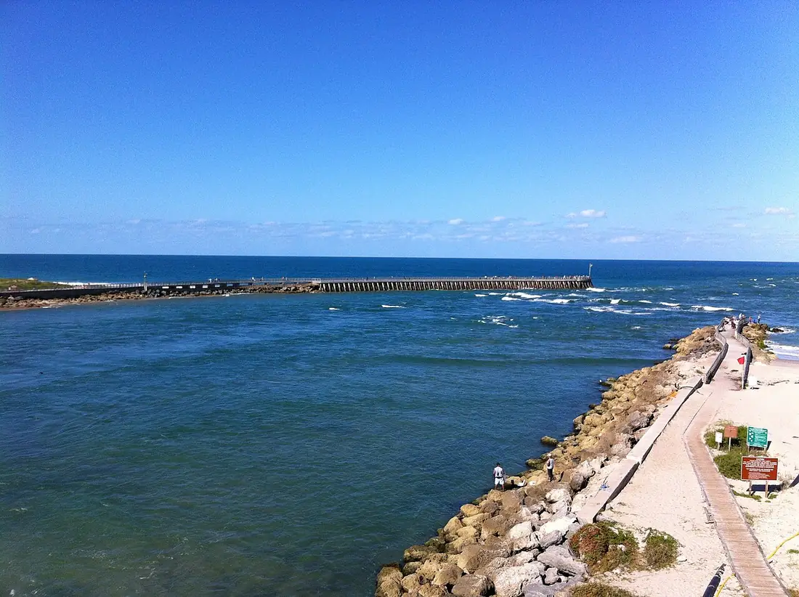

Sebastian Inlet — First Peak
Floride, États-Unis · surf

Pic de surf au nord de la jetée nord de Sebastian Inlet, dans le parc d’État. La jetée renvoie la houle en un pic creux et rapide, considéré comme l’une des vagues les plus régulières de la côte est de la Floride.
- Lieu
- Floride, États-Unis
- Niveau
- Intermédiaire
- Activités
- surf
- Type d'eau
- Mer / océan
- Coordonnées
- 27.86, -80.45 (position approximative du secteur)
Dangers à connaître
- Courants de marée puissants près de la passe et de la jetée.
- Pêcheurs sur la jetée : lignes et hameçons dans l’eau.
- Présence de requins documentée sur cette côte : évite l’eau trouble et l’aube près de la passe.
Le conseil d'Ocean Buddy
Surfe plutôt en semaine tôt le matin : le pic est étroit et très fréquenté par les locaux.
Ouvrir dans Ocean Buddy Télécharger sur l'App Store
Source : Fiche Ocean Buddy · septembre 2026 · à vérifier localement.